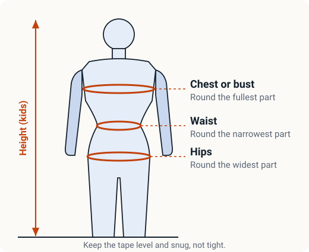

Quick answer
- India has no single size system. Stores like Marks & Spencer India sell UK sizes, and Indian brands use letters (S, M, L) and inches (a 38 kurta, a 32 jeans).
- On M&S's charts, a women's UK 10 fits a 87 cm bust. It is size S, and M&S lists it with US 4–6 and EU 36–38.
- Go by your body in cm or inches, not by the letter. Sizes vary by brand, so check the brand's own chart too.
Step 1: measure yourself

- Chest or bust: wear a thin top, and put the tape round the fullest part, under the arms. Keep it level across your back.
- Waist: round the narrowest part of your body, usually just above the navel. Breathe out normally; don't pull in your stomach.
- Hips: stand with your feet together and put the tape round the widest part of your bottom.
- Kids: measure height without shoes, standing against a wall, and the chest round the fullest part.
- Keep the tape snug, not tight. No tape? Use a string, then lay it on a ruler.
Step 2: find your size
Size charts
All the charts below are body measurements: the size that fits a body of that chest, waist or hip. Each chart keeps its brand's own numbers, and we name the brand on every chart. Where brands differ, we show both.
Men's size charts
Men's T-shirts, polos and casual shirts (Marks & Spencer India)
| Size | Chest |
|---|---|
| XS | 81–86 cm 32–34 in |
| S | 87–94 cm 34.5–37 in |
| M | 97–102 cm 38–40 in |
| L | 104–109 cm 41–43 in |
| XL | 112–117 cm 44–46 in |
| 2XL | 119–125 cm 47–49 in |
| 3XL | 126–132 cm 49.5–52 in |
| 4XL | 132–137 cm 52–54 in |
| 5XL | 142–147 cm 56–58 in |
Body measurements, from Marks & Spencer India's size guide. Inches are worked out from the cm.
Men's formal shirts by collar size (Marks & Spencer India)
| Collar (cm) | Chest | Collar (in) | Letter |
|---|---|---|---|
| 36 | 86 cm 34 in | 14 | S |
| 37 | 91 cm 36 in | 14½ | S |
| 38 | 96 cm 38 in | 15 | M |
| 39–40 | 102 cm 40 in | 15½ | M |
| 41 | 107 cm 42 in | 16 | L |
| 42 | 112 cm 44 in | 16½ | L |
| 43 | 117 cm 46 in | 17 | XL |
| 44–45 | 122 cm 48 in | 17½ | 2XL |
| 46 | 127 cm 50 in | 18 | 2XL |
| 47 | 132 cm 52 in | 18½ | 3XL |
| 48 | 137 cm 54 in | 19 | 3XL |
| 49–50 | 142 cm 56 in | 19½ | 4XL |
| 50 | 147 cm 58 in | 20 | 4XL |
| 52 | 152 cm 60 in | 20½ | 5XL |
| 53 | 157 cm 62 in | 21 | 5XL |
Body measurements, from Marks & Spencer India's size guide. Inches are worked out from the cm.
Men's jeans (Levi's India, 511 slim fit)
| Size | Waist |
|---|---|
| 26 | 69.8 cm 27.5 in |
| 27 | 72.4 cm 28.5 in |
| 28 | 74.9 cm 29.5 in |
| 29 | 77.5 cm 30.5 in |
| 30 | 80 cm 31.5 in |
| 31 | 82.5 cm 32.5 in |
| 32 | 85.1 cm 33.5 in |
| 33 | 87.6 cm 34.5 in |
| 34 | 90.2 cm 35.5 in |
| 35 | 92.7 cm 36.5 in |
| 36 | 95.2 cm 37.5 in |
| 38 | 100.3 cm 39.5 in |
| 40 | 105.4 cm 41.5 in |
| 42 | 110.5 cm 43.5 in |
| 44 | 115.6 cm 45.5 in |
Body measurements, from Levi's India's size guide. Inches are worked out from the cm.
Men's formal trousers (Marks & Spencer India)
| Size | Waist |
|---|---|
| S | 76–81 cm 30–32 in |
| M | 84–89 cm 33–35 in |
| L | 91–97 cm 36–38 in |
| XL | 99–104 cm 39–41 in |
| 2XL | 107–112 cm 42–44 in |
| 3XL | 114–119 cm 45–47 in |
Body measurements, from Marks & Spencer India's size guide. Inches are worked out from the cm.
Women's size charts
Women's tops (Marks & Spencer India)
| UK size | Bust | Waist | Letter | US | EU |
|---|---|---|---|---|---|
| UK 6 | 78 cm 30.5 in | 61 cm 24 in | XS | – | – |
| UK 8 | 82 cm 32.5 in | 65 cm 25.5 in | S | 4–6 | 36–38 |
| UK 10 | 87 cm 34.5 in | 70 cm 27.5 in | S | 4–6 | 36–38 |
| UK 12 | 92 cm 36 in | 75 cm 29.5 in | M | 8–10 | 40–42 |
| UK 14 | 97 cm 38 in | 80.5 cm 31.5 in | M | 8–10 | 40–42 |
| UK 16 | 102.5 cm 40.5 in | 86 cm 34 in | L | 12–14 | 44–46 |
| UK 18 | 108 cm 42.5 in | 92 cm 36 in | L | 12–14 | 44–46 |
| UK 20 | 114 cm 45 in | 98 cm 38.5 in | XL | 16–18 | 48–50 |
| UK 22 | 120 cm 47 in | 104 cm 41 in | XL | 16–18 | 48–50 |
| UK 24 | 126 cm 49.5 in | 110 cm 43.5 in | XXL | 20–22 | 52–54 |
| UK 26 | 132 cm 52 in | 116 cm 45.5 in | XXL | 20–22 | 52–54 |
Body measurements, from Marks & Spencer India's size guide. US and EU sizes from M&S international size conversion, which gives them in pairs. Inches are worked out from the cm.
Kurtas and kurtis (Libas)
| Size | Bust | Waist | Hips |
|---|---|---|---|
| XS | 34 in 86 cm | 30 in 76 cm | 36 in 91 cm |
| S | 36 in 91 cm | 32 in 81 cm | 38 in 97 cm |
| M | 38 in 97 cm | 34 in 86 cm | 40 in 102 cm |
| L | 40 in 102 cm | 36 in 91 cm | 42 in 107 cm |
| XL | 42 in 107 cm | 38 in 97 cm | 44 in 112 cm |
| XXL | 44 in 112 cm | 40 in 102 cm | 46 in 117 cm |
Body measurements, from Libas's size guide. Libas gives inches; cm are worked out.
Women's dresses (Marks & Spencer India)
| UK size | Bust | Waist | Hips | Letter | US | EU |
|---|---|---|---|---|---|---|
| UK 6 | 78 cm 30.5 in | 61 cm 24 in | 86 cm 34 in | – | – | – |
| UK 8 | 82 cm 32.5 in | 65 cm 25.5 in | 90 cm 35.5 in | S | 4–6 | 36–38 |
| UK 10 | 87 cm 34.5 in | 70 cm 27.5 in | 95 cm 37.5 in | S | 4–6 | 36–38 |
| UK 12 | 92 cm 36 in | 75 cm 29.5 in | 100 cm 39.5 in | M | 8–10 | 40–42 |
| UK 14 | 97 cm 38 in | 80.5 cm 31.5 in | 105 cm 41.5 in | M | 8–10 | 40–42 |
| UK 16 | 102.5 cm 40.5 in | 86 cm 34 in | 110 cm 43.5 in | L | 12–14 | 44–46 |
| UK 18 | 108 cm 42.5 in | 92 cm 36 in | 115 cm 45.5 in | L | 12–14 | 44–46 |
| UK 20 | 114 cm 45 in | 98 cm 38.5 in | 121 cm 47.5 in | XL | 16–18 | 48–50 |
| UK 22 | 120 cm 47 in | 104 cm 41 in | 127 cm 50 in | XL | 16–18 | 48–50 |
| UK 24 | 126 cm 49.5 in | 110 cm 43.5 in | 133 cm 52.5 in | XXL | 20–22 | 52–54 |
| UK 26 | 132 cm 52 in | 116 cm 45.5 in | 139 cm 54.5 in | XXL | 20–22 | 52–54 |
Body measurements, from Marks & Spencer India's size guide. US and EU sizes from M&S international size conversion, which gives them in pairs. Inches are worked out from the cm.
Women's jeans (ONLY India)
| Size | Waist | Hips | Letter | UK | US |
|---|---|---|---|---|---|
| 25 | 62 cm 24.5 in | 88 cm 34.5 in | XS | 6 | 2 |
| 26 | 62 cm 24.5 in | 88 cm 34.5 in | XS | 6 | 2 |
| 27 | 67 cm 26.5 in | 93 cm 36.5 in | S | 8 | 4 |
| 28 | 67 cm 26.5 in | 93 cm 36.5 in | S | 8 | 4 |
| 29 | 72 cm 28.5 in | 98 cm 38.5 in | M | 10 | 6 |
| 30 | 72 cm 28.5 in | 98 cm 38.5 in | M | 10 | 6 |
| 31 | 77 cm 30.5 in | 103 cm 40.5 in | L | 12 | 8 |
| 32 | 77 cm 30.5 in | 103 cm 40.5 in | L | 12 | 8 |
| 33 | 82 cm 32.5 in | 108 cm 42.5 in | XL | 14 | 10 |
| 34 | 82 cm 32.5 in | 108 cm 42.5 in | XL | 14 | 10 |
Body measurements, from ONLY India's size guide. Inches are worked out from the cm.
Women's jeans, trousers and skirts (Marks & Spencer India)
| UK size | Waist | Hips | Letter |
|---|---|---|---|
| UK 6 | 61 cm 24 in | 86 cm 34 in | XS |
| UK 8 | 65 cm 25.5 in | 90 cm 35.5 in | S |
| UK 10 | 70 cm 27.5 in | 95 cm 37.5 in | S |
| UK 12 | 75 cm 29.5 in | 100 cm 39.5 in | M |
| UK 14 | 80.5 cm 31.5 in | 105 cm 41.5 in | M |
| UK 16 | 86 cm 34 in | 110 cm 43.5 in | L |
| UK 18 | 92 cm 36 in | 115 cm 45.5 in | L |
| UK 20 | 98 cm 38.5 in | 121 cm 47.5 in | XL |
| UK 22 | 104 cm 41 in | 127 cm 50 in | XL |
| UK 24 | 110 cm 43.5 in | 133 cm 52.5 in | XXL |
Body measurements, from Marks & Spencer India's size guide. Inches are worked out from the cm.
Kids' size chart by age
Boys (Marks & Spencer India)
| Age (years) | Height | Chest | Waist |
|---|---|---|---|
| 2–3 years | 98 cm 38.5 in | 54 cm 21.5 in | 52 cm 20.5 in |
| 3–4 years | 104 cm 41 in | 56 cm 22 in | 53.5 cm 21 in |
| 4–5 years | 110 cm 43.5 in | 58 cm 23 in | 55 cm 21.5 in |
| 5–6 years | 116 cm 45.5 in | 61 cm 24 in | 56 cm 22 in |
| 6–7 years | 122 cm 48 in | 63 cm 25 in | 57 cm 22.5 in |
| 7–8 years | 128 cm 50.5 in | 66 cm 26 in | 59 cm 23 in |
| 8–9 years | 134 cm 53 in | 69 cm 27 in | 61 cm 24 in |
| 9–10 years | 140 cm 55 in | 72 cm 28.5 in | 63.5 cm 25 in |
| 10–11 years | 146 cm 57.5 in | 75 cm 29.5 in | 66 cm 26 in |
| 11–12 years | 152 cm 60 in | 78 cm 30.5 in | 68 cm 27 in |
| 12–13 years | 158 cm 62 in | 82 cm 32.5 in | 70 cm 27.5 in |
| 13–14 years | 164 cm 64.5 in | 86 cm 34 in | 73 cm 28.5 in |
| 14–15 years | 170 cm 67 in | 90 cm 35.5 in | 76.5 cm 30 in |
| 15–16 years | 176 cm 69.5 in | 94 cm 37 in | 81 cm 32 in |
Body measurements, from Marks & Spencer India's size guide. Inches are worked out from the cm.
Girls (Marks & Spencer India)
| Age (years) | Height | Chest | Waist | Hips |
|---|---|---|---|---|
| 2–3 years | 98 cm 38.5 in | 54 cm 21.5 in | 52 cm 20.5 in | 55 cm 21.5 in |
| 3–4 years | 104 cm 41 in | 56 cm 22 in | 53.5 cm 21 in | 58 cm 23 in |
| 4–5 years | 110 cm 43.5 in | 58 cm 23 in | 55 cm 21.5 in | 61 cm 24 in |
| 5–6 years | 116 cm 45.5 in | 61 cm 24 in | 56 cm 22 in | 64 cm 25 in |
| 6–7 years | 122 cm 48 in | 63 cm 25 in | 57 cm 22.5 in | 67 cm 26.5 in |
| 7–8 years | 128 cm 50.5 in | 66 cm 26 in | 58 cm 23 in | 70 cm 27.5 in |
| 8–9 years | 134 cm 53 in | 69 cm 27 in | 60 cm 23.5 in | 73.5 cm 29 in |
| 9–10 years | 140 cm 55 in | 72 cm 28.5 in | 62 cm 24.5 in | 77 cm 30.5 in |
| 10–11 years | 146 cm 57.5 in | 75 cm 29.5 in | 63 cm 25 in | 80 cm 31.5 in |
| 11–12 years | 152 cm 60 in | 78 cm 30.5 in | 64 cm 25 in | 84 cm 33 in |
| 12–13 years | 158 cm 62 in | 83 cm 32.5 in | 65.5 cm 26 in | 88 cm 34.5 in |
| 13–14 years | 164 cm 64.5 in | 87 cm 34.5 in | 67 cm 26.5 in | 92 cm 36 in |
| 14–15 years | – | 87–91 cm 34.5–36 in | 67–71 cm 26.5–28 in | 92–96 cm 36–38 in |
| 15–16 years | – | 91–95 cm 36–37.5 in | 71–73.5 cm 28–29 in | 96–100 cm 38–39.5 in |
Body measurements, from Marks & Spencer India's size guide. Inches are worked out from the cm.
Checked on 20 Nov 2026 on Marks & Spencer India size guides, M&S international size conversion, Libas size chart, Levi's India 511 jeans size guide, ONLY India women's jeans size chart. Sizes vary by brand and by fit (slim, regular, relaxed), so the size chart on the product page is the one to trust.
UK, US and EU sizes for women
M&S's own table gives UK, US and EU sizes in pairs: UK 8–10 is US 4–6 and EU 36–38 (Small), and UK 12–14 is US 8–10 and EU 40–42 (Medium). Up to UK 26, M&S's US number is 4 less than the UK one and the EU number is 28 more. Other brands can differ, and M&S gives no US or EU sizes for trousers.
Women's jeans sizes 26, 28, 30, 32
Women's jeans in India are often sold by number. On ONLY India's chart, a size 28 jeans is an S, a UK 8 and a US 4, for a 67 cm waist and 93 cm hips. A size 30 is an M (UK 10, US 6), for a 72 cm waist and 98 cm hips. ONLY gives the same numbers to each pair of sizes (25 and 26, 27 and 28, and so on), so either size of a pair fits the same body. ONLY's product pages also list each size's own garment measurements under Size Details.
Brands differ: ONLY's UK 10 jeans are for a 72 cm waist, but M&S's UK 10 trousers are for a 70 cm waist. Use the chart of the brand you buy.
Men's shirt sizes 38, 39, 40, 42
Formal shirts in India are often sold by collar size in cm. On M&S India's chart, a 38 collar is a M with a 96 cm chest, and a 42 collar is an L. T-shirts and casual shirts go by letter: an M fits a 97–102 cm chest on M&S's chart.
Kids' clothes are sold by age, but children of the same age differ a lot. Go by height first: if your child is between two sizes, take the bigger one.
Our clothing picks for trips
Thermals, jackets and rain wear for men and women, and a few picks for kids. Each Amazon page has the brand's own size chart: check it before you order.


Symbol
Amazon Brand - Symbol Boys Polyester Quilted Winter Jacket with Detachable Hood
- Quilted, with a detachable hood
- Pockets and a zip closure

Allen Solly
Allen Solly Junior Boys Cotton Hooded Sweatshirt
- Hooded neck, long sleeves
- 60% cotton, 40% polyester


Lux Cottswool
Lux Cottswool Men's Cotton Thermal Set
- 1 top and 1 bottom pyjama
- 100% cotton (as listed)

Lux Cottswool
Lux Cottswool Women's Thermal Top and Lower Set
- Matching top and lower
- Stretchable, snug fit to wear under clothes

Boldfit
Boldfit Men's Hooded Puffer Jacket
- Wind-resistant and water-repellent (as listed)
- Polyester with a hood

Symbol
Symbol Women's Quilted Hooded Jacket
- 100% polyester shell, lining and fill
- Hooded, regular fit
Gajraj
Gajraj Winter Cap, Neck Warmer and Gloves Set
- 3 pieces: knit cap, neck warmer and gloves
- Stretchable, for men and women

Rocksport
Rocksport Unisex Hooded Rain Poncho
- PU 2000 mm waterproof coating (as listed)
- Long enough to cover you and a backpack
More help: our shoe size converter (India/UK, US, EU and cm), winter clothes for hill trips and all our clothing picks.
Questions
Can I enter my measurements in inches?
Yes. Change Units to inches and type your chest, waist or hips in inches. We turn them into cm for the charts. The size list shows each size with its UK, US and EU numbers where the chart has them, so you can start from a US or UK size too.
Is a 38 size shirt M or L?
On Marks & Spencer India's formal shirt chart, a 38 collar is an M, for a chest of 96 cm. A 41 or 42 collar is an L. Indian brands use the same collar numbers, but which letter they call it can differ, so check the brand's chart.
What is XL size in number for men?
On M&S India's charts, an XL shirt or T-shirt fits a 112–117 cm chest (about 44–46 in), and XL trousers fit a 99–104 cm waist (about 39–41 in).
Is 32 size jeans L or XL?
Usually neither. On Levi's India's 511 chart, size 32 is for a waist of 85.1 cm (about 33.5 in). On M&S India's trouser chart, that waist is a M (84–89 cm).
How do I convert UK size to Indian size for clothes?
Many stores in India, like Marks & Spencer India, sell clothes in UK sizes, so a UK 12 is the same size here. On M&S's chart a women's UK 12 is a Medium, for a 92 cm bust.
What is 28 size jeans for women?
On ONLY India's chart, size 28 jeans are an S, a UK 8 and a US 4, for a waist of 67 cm (about 26.5 in) and hips of 93 cm.
What is size 30 jeans for women in US and UK size?
On ONLY India's chart, size 30 is a UK 10 and a US 6 (M), for a 72 cm waist and 98 cm hips.
What is US size to Indian size for women's clothes?
On M&S's table, US 4–6 is UK 8–10 and EU 36–38 (Small), and US 8–10 is UK 12–14 and EU 40–42 (Medium). Sizes in India are usually given as UK sizes or letters.
What does kurti size 38 mean?
On Libas's kurta chart, the 38 is the bust in inches: size M fits a 38 in bust, 34 in waist and 40 in hips.
What size is a 5 year old in India?
On M&S India's boys' chart, 5–6 years is for a height of 116 cm and a chest of 61 cm. Measure your child's height, because children of the same age differ a lot.
How do I measure my chest, waist and hips?
Use a soft tape. Chest or bust: round the fullest part, under the arms. Waist: round the narrowest part, above the navel. Hips: round the widest part of the bottom, feet together. Keep the tape level and snug, not tight.
Cite or link to this tool
Free to link from your blog, school project or travel guide. No sign-up, no embed code.
- Title: Clothing size chart India
- URL: https://carrypick.github.io/tools/clothing-size.html
- Last checked: 20 Nov 2026
Sources (5)
- Marks & Spencer India size guides (read on 20 Nov 2026)
- M&S international size conversion (read on 20 Nov 2026)
- Libas size chart (read on 20 Nov 2026)
- Levi's India 511 jeans size guide (read on 20 Nov 2026)
- ONLY India women's jeans size chart (read on 20 Nov 2026)
More free travel tools
- Gift finder quiz
- Long weekends 2027
- Airline baggage rules
- Cabin bag checker
- Extra baggage charges
- International baggage rules
- Luggage size chart
- Can I carry it on a flight?
- Indian customs rules
- Train luggage rules
- Excess baggage calculator
- Backpack for my laptop
- Watch size by wrist
- Shoe size converter
- Power bank flight checker
- Packing list maker
- Packing checklists
- What to wear helper
- Trip budget calculator
- Road trip fuel cost calculator
- Visa guide for Indians